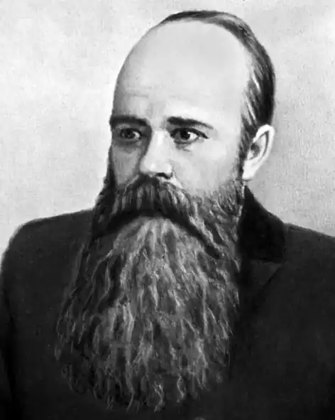

Майбутній письменник народився 15 вересня 1852 року у Луцьку.
Залишившись у шестирічному віці без матері, Григорій Мачтет навчався та виховувався вдома під керівництвом німкені-гувернантки. 1861 року його віддали на навчання в Немирівську гімназію, де він провчився до четвертого класу. 1865 року Григорія виключили з гімназії, несправедливо звинувативши в прихильності до "польського духу". У радянський час на головному фасаді колишньої чоловічої гімназії було встановлено меморіальну дошку про те, що тут навчався Мачтет.
1865 року 13-річний Мачтет зовсім осиротів: помер батько, залишивши п'ятьом дітям тільки дві шафи з книжками. 1866 року Мачтет продовжив навчання в Кам'янець-Подільській чоловічій гімназії. 1868 року, незадовго до випускних іспитів, Мачтета знову виключили з гімназії. Цього разу за влаштування спільного читання та обговорення заборонених книг (серед них — творів Миколи Добролюбова) та за зухвальство щодо начальства. Зокрема, інспекторові гімназії Олександру Даниловичу Тулубу, який зневажливо відгукнувся про Миколу Чернишевського. Григорій отримав "вовчий білет" (позбавлення права вступу в будь-який навчальний заклад Російської імперії), тож далі навчався самостійно — при допомозі товаришів і вчителів. Начальство гімназії навіть наполягало на тому, щоб юнака вислали з Кам'янця-Подільського, але подільський губернатор відмовився від такого кроку, мотивуючи це тим, що 16-річний Мачтет занадто молодий, тому не може бути небезпечним. 1870 року один з учителів Кам'янець-Подільської гімназії через попечителя Київського навчального округу Платона Антоновича, який в юності сам брав участь у студентських виступах і притягався до відповідальності, добився, щоб Мачтету дозволили скласти іспит на звання вчителя історії та географії повітових училищ. Два роки Мачтет викладав у повітових школах Могилева-Подільського та Кам'янця-Подільського. Але школа не стала для Григорія Мачтета основною справою. Головнішою для нього була участь у нелегальному гуртку, який вів підготовку до організації хліборобської комуни. 1872 року Мачтета звільнили зі служби — і знову за політичну неблагонадійність. Він виїхав за кордон — спочатку до Цюриху, а наприкінці 1872 року в товаристві ще двох "американців" — І. Речицького та О. Романовського — за океан, у США, щоб там здійснити задумане. Дійсність виявилася відмінною від юначих мрій: Мачтету та Речицькому довелося важко працювати, поденною роботою на фермах добувати засоби для існування. Оскільки задум з комуною не вдалася, 1874 року Мачтет повернувся в Росію. У Санкт-Петербурзі він брав участь у революційному народницькому русі. Мачтета ув'язнили в Петропавлівській фортеці. За найвищим повелінням 2 жовтня 1877 року Мачтета вислали в адміністративному порядку під нагляд поліції в Архангельську губернію. Від 30 жовтня 1877 року він проживав у місті Шенкурськ. Через рік, 10 жовтня 1878 року, Мачтет спробував утекти, але його затримали наступного ж дня після спроби та перевели в Мезень. Не забарилося й покарання: Мачтета мали вислати до Якутії, звідки він не мав надії повернутися. Завдяки клопотанню друзів долю Мачтета "пом'якшили": 1879 року його вислали в місто Тюкалинськ Тобольської губернії, а 1880 року перевели в Ішим. У липні 1880 року в Ішимі Мачтет одружився з Оленою Медведєвою. Олена Петрівна була москвичкою, дочкою титулярного радника, колишньою цюрихською студенткою, а в Ішимі відбувала заслання за участь у "протизаконному товаристві". Олена Петрівна хворіла. Щоб підтримати сім'ю, Григорій Олександрович брався за будь-яку роботу: був підвальним при складі місцевого купця, давав уроки. На засланні він багато писав, був співробітником місцевої преси, посилав свої твори в Петербург. Олені Петрівні через хворобу (туберкульоз) було дозволено покинути Ішим і жити на Кавказі. В грудні 1885 року вона виїхала в Кутаїс (нині Кутаїсі), але в дорозі захворіла і в травні наступного року померла в Москві. Григорія Олександровича звільнили із заслання в серпні 1885 року. Від вересня 1886 року Мачтет жив під негласним наглядом у Москві, від березня 1887 року — в Одесі. У 1897—1900 роках письменник жив у Житомирі, де служив в акцизному управлінні, бував у Києві. Наприкінці 1890-х років Мачтет часто виступав із фейлетонами в житомирській газеті "Волинь". Він усе ще був під негласним наглядом поліції, йому заборонили жити в Петербурзі. Михайло Коцюбинський У Житомирі відбулося знайомство Мачтета з українським письменником Михайлом Коцюбинським (останній у Житомирі мешкав півроку — від листопада 1897 року до березня 1898 року). Під час перебування в Україні Мачтет познайомився і заприятелював із літературним осередком родини Косачів — Оленою Пчілкою, Лесею Українкою, Михайлом Обачним (під таким псевдонімом друкувався Лесин брат Михайло). 1890 року Мачтет одружився вдруге з дуже молодою дівчиною, якій щойно виповнилося 18 років – Ольгою Миколаївною Родзевич, племінницею відомого видавця газети "Московський телеграф" Гната Гнатовича Родзевича. У другому шлюбі Мачтет мав двоє дітей — сина Тараса (1891—1942) та доньку Тетяну (1893—1971). Сім'я жила в нужді, служба висотувала всі сили, вимагала великого нервового напруження, майже не залишаючи часу для творчості. Наприкінці 1900 року Мачтету, нарешті, вдалося добитися дозволу на переїзд до столиці Російської імперії. У грудні письменник поселився в Петербурзі. Там він сподівався реалізувати численні творчі задуми й плани. Але в ніч на 14 серпня 1901 року (за старим стилем), перебуваючи в Ялті на відпочинку, Григорій Олександрович помер від паралічу серця. Через три тижні письменникові мало виповнитися 49 років.